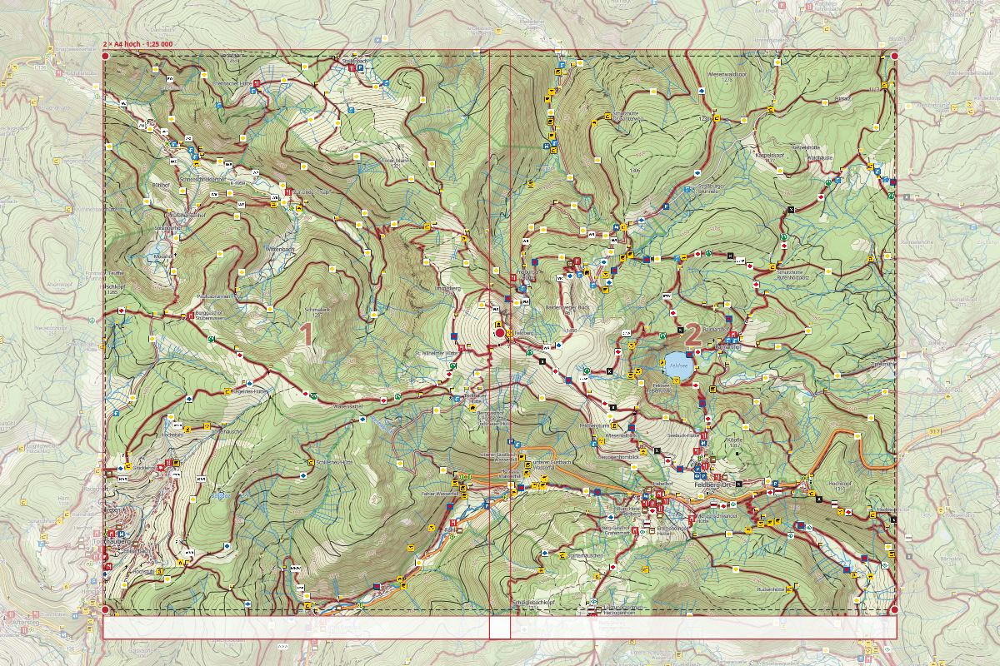

Print it
Set the area and let the app cut it into A4 pages. You get one PDF, ready to print.
- A4 portrait or landscape
- Scale 1:15,000, 1:25,000 or 1:50,000, or choose the number of pages
- Multi-page PDF at 300 dpi
- Scale bar and source line on the page margin